Простые салаты
Салаты на каждый день и на праздник. 64 рецептов: у каждого время, калории и БЖУ на порцию, пошаговые инструкции и список покупок
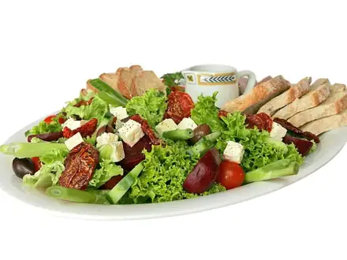
Салат из свежих овощей10 мин · 130 ккал · Б 2 г · Салат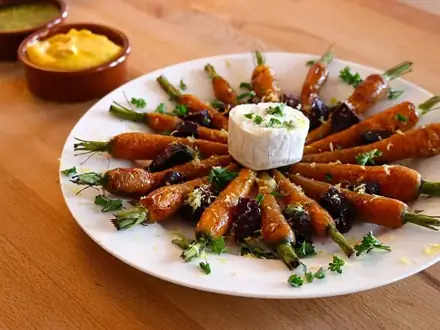
Морковь с чесноком и сыром10 мин · 279 ккал · Б 11 г · Салат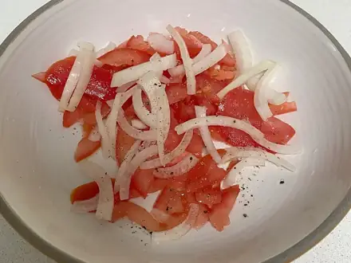
Ачичук10 мин · 41 ккал · Б 2 г · Салат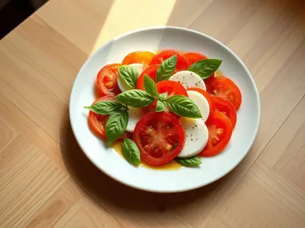
Салат «Капрезе» с моцареллой и помидорами10 мин · 297 ккал · Б 16 г · Салат- Салат из квашеной капусты с луком и маслом10 мин · 167 ккал · Б 3 г · Салат
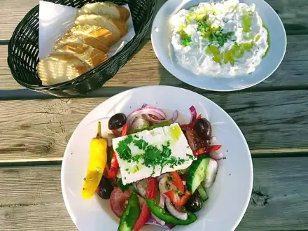
Греческий салат15 мин · 353 ккал · Б 12 г · Салат- Салат с тунцом и фасолью15 мин · 220 ккал · Б 21 г · Салат
 Салат «Красное море» с крабовыми палочками и помидорами15 мин · 275 ккал · Б 11 г · Салат
Салат «Красное море» с крабовыми палочками и помидорами15 мин · 275 ккал · Б 11 г · Салат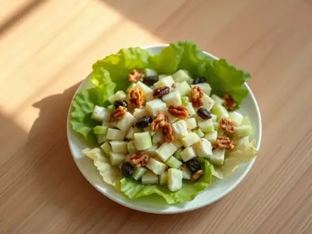
Салат «Вальдорф» с сельдереем, яблоком и орехами15 мин · 279 ккал · Б 5 г · Салат Фруктовый салат с йогуртом15 мин · 155 ккал · Б 4 г · Салат
Фруктовый салат с йогуртом15 мин · 155 ккал · Б 4 г · Салат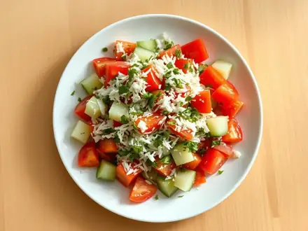
Шопский салат с брынзой15 мин · 223 ккал · Б 10 г · Салат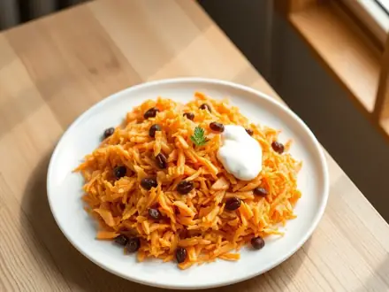
Салат из моркови с яблоком и изюмом15 мин · 137 ккал · Б 2 г · Салат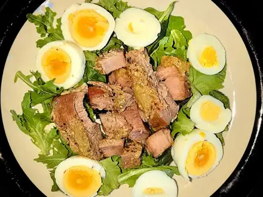
Салат с тунцом и яйцом20 мин · 258 ккал · Б 23 г · Салат Морковь по-корейски20 мин · 136 ккал · Б 1 г · Салат
Морковь по-корейски20 мин · 136 ккал · Б 1 г · Салат Салат «Тбилиси» с фасолью и говядиной20 мин · 465 ккал · Б 29 г · Салат
Салат «Тбилиси» с фасолью и говядиной20 мин · 465 ккал · Б 29 г · Салат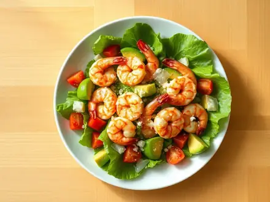
Тёплый салат с креветками и авокадо20 мин · 460 ккал · Б 33 г · Салат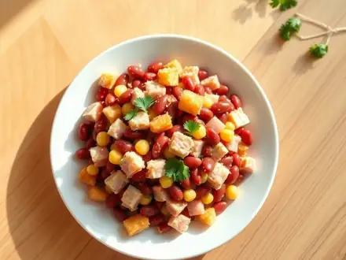
Салат с фасолью, ветчиной и сухариками20 мин · 513 ккал · Б 21 г · Салат Панцанелла с помидорами20 мин · 370 ккал · Б 8 г · Салат
Панцанелла с помидорами20 мин · 370 ккал · Б 8 г · Салат Салат «Обжорка» с говядиной и солёными огурцами20 мин · 556 ккал · Б 29 г · Салат
Салат «Обжорка» с говядиной и солёными огурцами20 мин · 556 ккал · Б 29 г · Салат- Салат «Витаминный» из капусты с морковью и яблоком20 мин · 141 ккал · Б 3 г · Салат
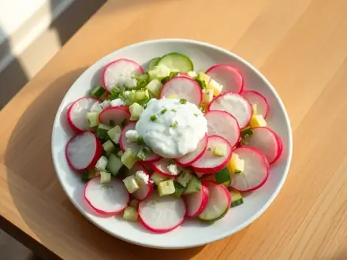
Салат из редиса с огурцом и яйцом со сметаной20 мин · 155 ккал · Б 7 г · Салат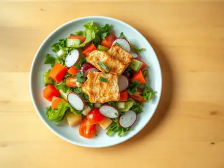
Фаттуш - ливанский салат с хрустящей лепёшкой20 мин · 206 ккал · Б 5 г · Салат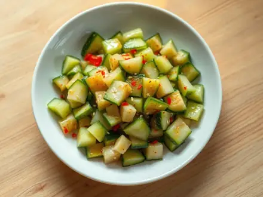
Битые огурцы по-китайски с чесноком20 мин · 135 ккал · Б 2 г · Салат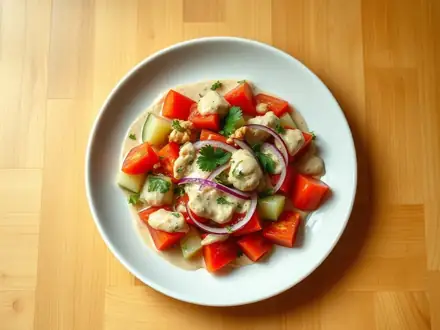
Грузинский салат из помидоров и огурцов с грецкими орехами20 мин · 175 ккал · Б 5 г · Салат Салат из курицы из супа25 мин · 369 ккал · Б 31 г · Салат
Салат из курицы из супа25 мин · 369 ккал · Б 31 г · Салат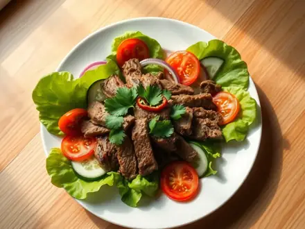
Тёплый салат с говядиной по-тайски25 мин · 413 ккал · Б 32 г · Салат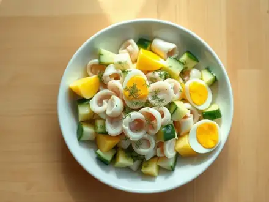
Салат с кальмарами, яйцом и огурцом25 мин · 415 ккал · Б 38 г · Салат- Тако-салат с фаршем и фасолью25 мин · 542 ккал · Б 32 г · Салат
- Лионский салат с беконом и яйцом пашот25 мин · 582 ккал · Б 25 г · Салат
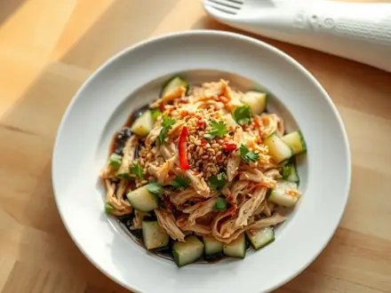
Салат с курицей и огурцами по-китайски25 мин · 289 ккал · Б 39 г · Салат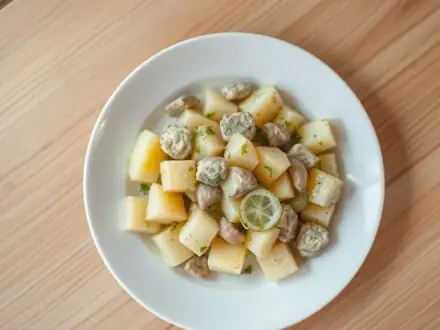
Тёплый картофельный салат с селёдкой и луком25 мин · 449 ккал · Б 21 г · Салат Салат с курицей, черносливом и грецкими орехами25 мин · 605 ккал · Б 36 г · Салат
Салат с курицей, черносливом и грецкими орехами25 мин · 605 ккал · Б 36 г · Салат- Тёплый салат с курицей и стручковой фасолью25 мин · 441 ккал · Б 46 г · Салат
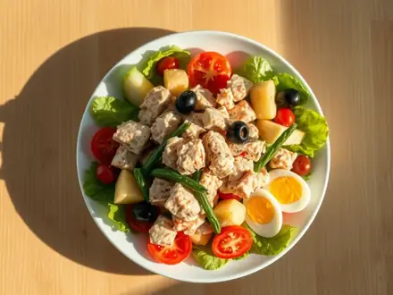
Салат «Нисуаз» с тунцом25 мин · 495 ккал · Б 34 г · Салат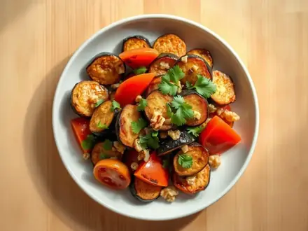
Тёплый салат из жареных баклажанов с помидорами и чесноком25 мин · 439 ккал · Б 8 г · Салат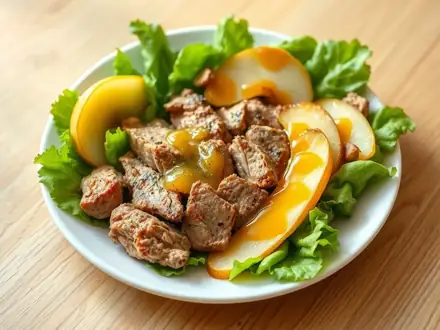
Тёплый салат с куриной печенью и грушей25 мин · 386 ккал · Б 30 г · Салат Салат с брокколи, беконом и изюмом25 мин · 369 ккал · Б 11 г · Салат
Салат с брокколи, беконом и изюмом25 мин · 369 ккал · Б 11 г · Салат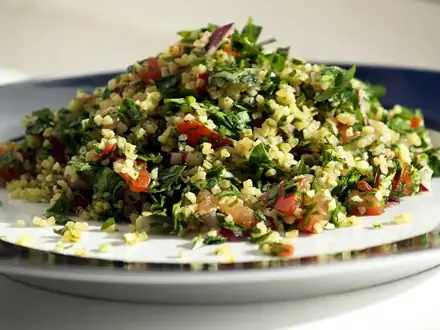
Табуле30 мин · 204 ккал · Б 4 г · Салат- Салат с куриной печенью и солёными огурцами30 мин · 494 ккал · Б 32 г · Салат
- Салат Кобб с курицей, беконом и авокадо30 мин · 604 ккал · Б 43 г · Салат
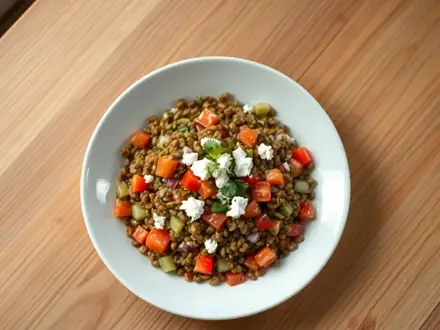
Тёплый салат с чечевицей и фетой30 мин · 430 ккал · Б 25 г · Салат Салат с курицей, жареными грибами и сыром30 мин · 456 ккал · Б 35 г · Салат
Салат с курицей, жареными грибами и сыром30 мин · 456 ккал · Б 35 г · Салат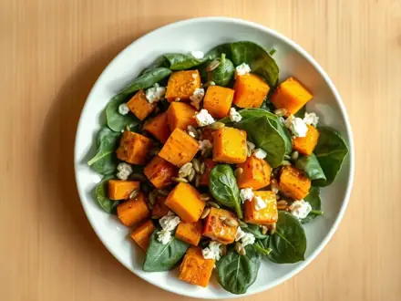
Тёплый салат с запечённой тыквой, шпинатом и фетой30 мин · 499 ккал · Б 21 г · Салат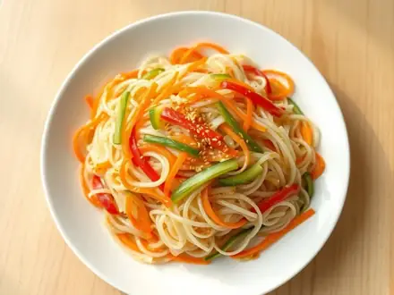
Фунчоза с овощами по-корейски30 мин · 284 ккал · Б 5 г · Салат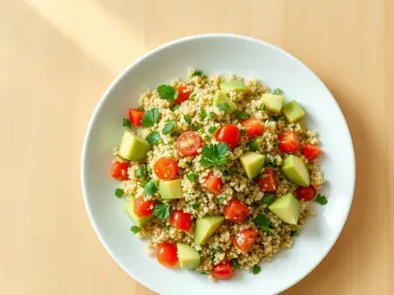
Салат с киноа, авокадо и овощами30 мин · 329 ккал · Б 8 г · Салат Крабовый салат35 мин · 345 ккал · Б 12 г · Салат
Крабовый салат35 мин · 345 ккал · Б 12 г · Салат Цезарь с курицей40 мин · 626 ккал · Б 45 г · Салат
Цезарь с курицей40 мин · 626 ккал · Б 45 г · Салат Картофельный салат по-немецки с беконом и огурцами40 мин · 346 ккал · Б 11 г · Салат
Картофельный салат по-немецки с беконом и огурцами40 мин · 346 ккал · Б 11 г · Салат Коулслоу - американский салат из капусты в сливочной заправке40 мин · 169 ккал · Б 4 г · Салат
Коулслоу - американский салат из капусты в сливочной заправке40 мин · 169 ккал · Б 4 г · Салат Салат «Купеческий» с курицей и маринованным луком50 мин · 277 ккал · Б 18 г · Салат
Салат «Купеческий» с курицей и маринованным луком50 мин · 277 ккал · Б 18 г · Салат Оливье60 мин · 494 ккал · Б 16 г · Салат
Оливье60 мин · 494 ккал · Б 16 г · Салат Салат Мимоза с сардинами60 мин · 455 ккал · Б 21 г · Салат
Салат Мимоза с сардинами60 мин · 455 ккал · Б 21 г · Салат Салат «Лисья шубка» с селёдкой и грибами60 мин · 377 ккал · Б 14 г · Салат
Салат «Лисья шубка» с селёдкой и грибами60 мин · 377 ккал · Б 14 г · Салат Слоёный печёночный салат с морковью и луком60 мин · 383 ккал · Б 21 г · Салат
Слоёный печёночный салат с морковью и луком60 мин · 383 ккал · Б 21 г · Салат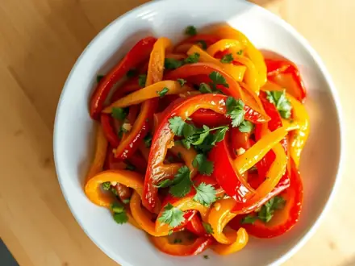
Салат из печёных перцев с чесноком и кинзой60 мин · 161 ккал · Б 3 г · Салат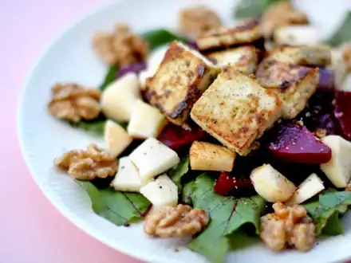
Свёкла с чесноком и орехами70 мин · 238 ккал · Б 4 г · Салат Винегрет75 мин · 178 ккал · Б 4 г · Салат
Винегрет75 мин · 178 ккал · Б 4 г · Салат Селёдка под шубой100 мин · 437 ккал · Б 16 г · Салат
Селёдка под шубой100 мин · 437 ккал · Б 16 г · Салат Салат «Гранатовый браслет» с курицей и свёклой100 мин · 349 ккал · Б 18 г · Салат
Салат «Гранатовый браслет» с курицей и свёклой100 мин · 349 ккал · Б 18 г · Салат- Салат с куриными желудками и морковью по-корейски120 мин · 314 ккал · Б 28 г · Салат
 Салат «Мужской каприз» с говядиной и маринованным луком130 мин · 398 ккал · Б 23 г · Салат
Салат «Мужской каприз» с говядиной и маринованным луком130 мин · 398 ккал · Б 23 г · Салат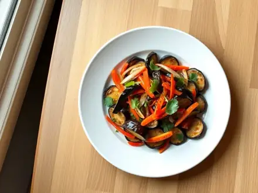
Баклажаны по-корейски165 мин · 241 ккал · Б 4 г · Салат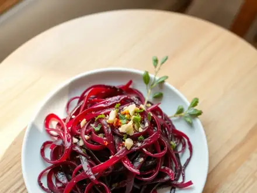
Свёкла по-корейски200 мин · 147 ккал · Б 2 г · Салат Салат с говяжьим языком, огурцом и грибами210 мин · 367 ккал · Б 20 г · Салат
Салат с говяжьим языком, огурцом и грибами210 мин · 367 ккал · Б 20 г · Салат
Другие подборки
- Что приготовить из курицы
- Что приготовить из фарша
- Что приготовить из мяса
- Что приготовить из рыбы
- Что приготовить из картошки
- Что приготовить из яиц
- Что приготовить из творога
- Что приготовить из кабачков
- Что приготовить из капусты
- Что приготовить из грибов
- Что приготовить из риса
- Что приготовить из макарон
- Что приготовить из гречки
- Быстрый ужин за 30 минут
- Быстрый завтрак за 20 минут
- Что приготовить на скорую руку
- ПП-рецепты: лёгкие блюда до 400 ккал
- Белковые блюда: от 25 г белка на порцию
- Дешёвые рецепты из простых продуктов
- Что приготовить ребёнку
- Постные блюда
- Блюда на пару
- Что приготовить в духовке
- Простые супы
- Выпечка и десерты
- Блюда на праздничный стол
- Что приготовить из остатков